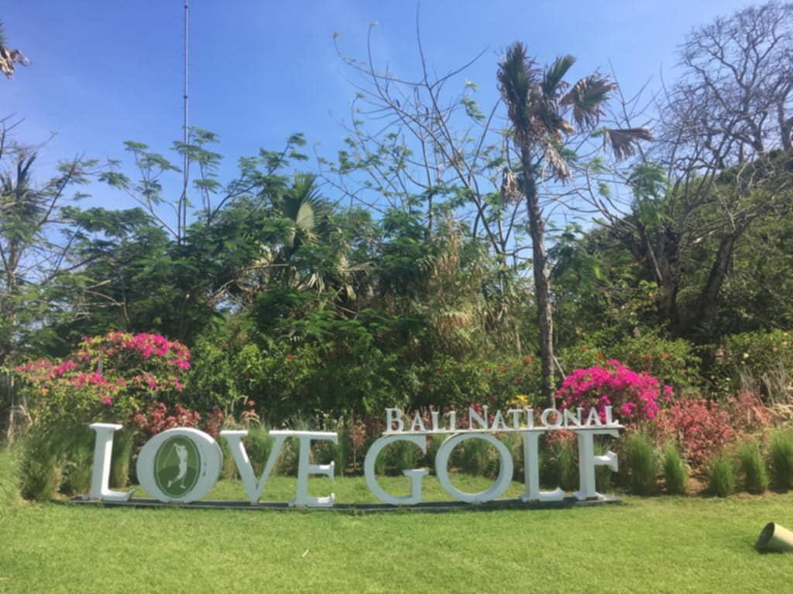
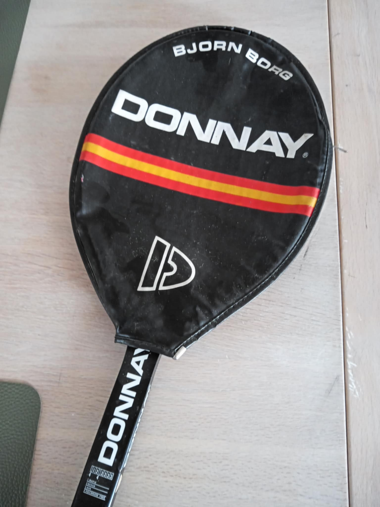
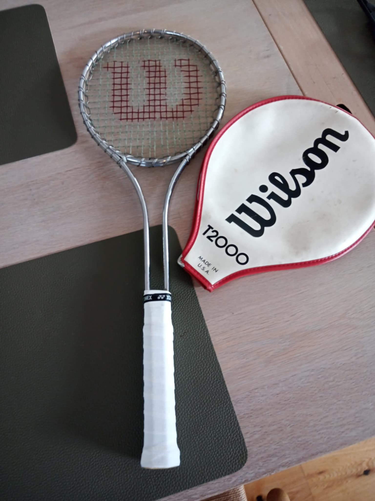
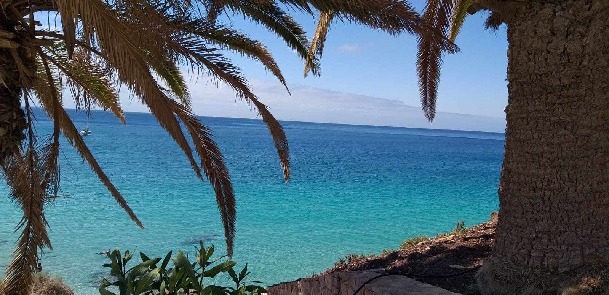
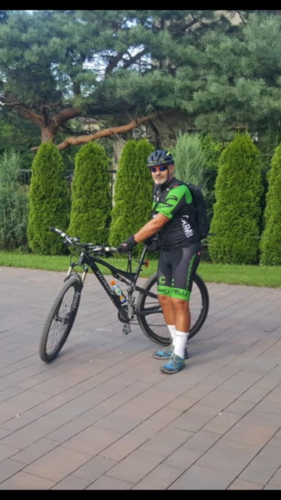
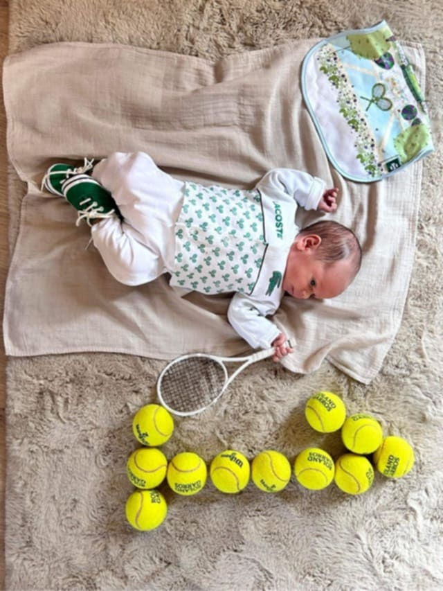
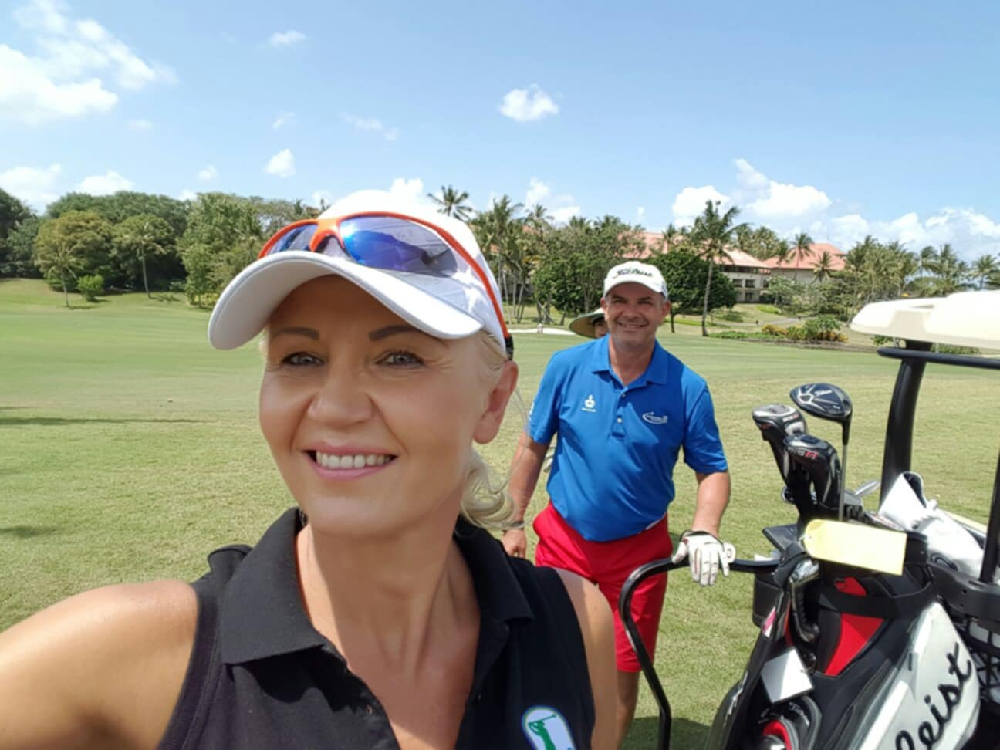
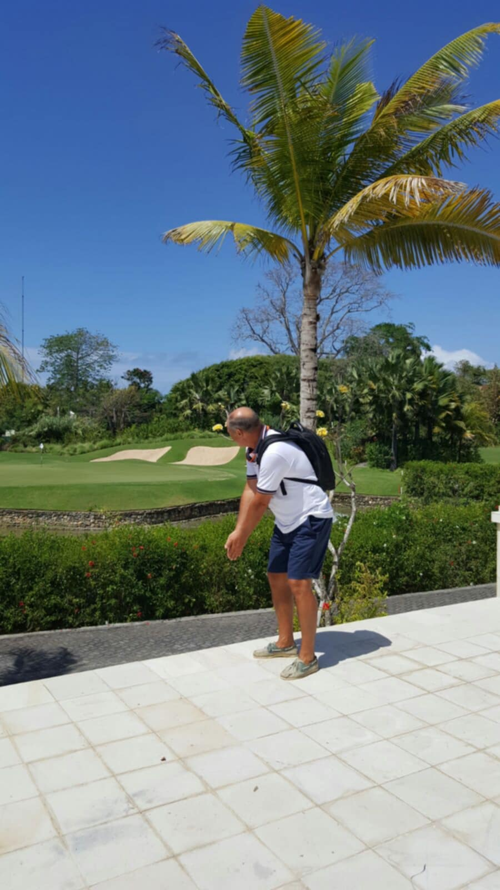
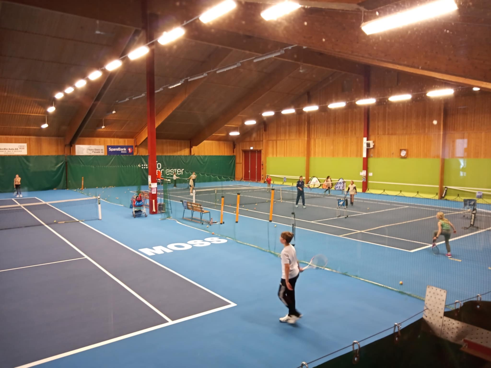
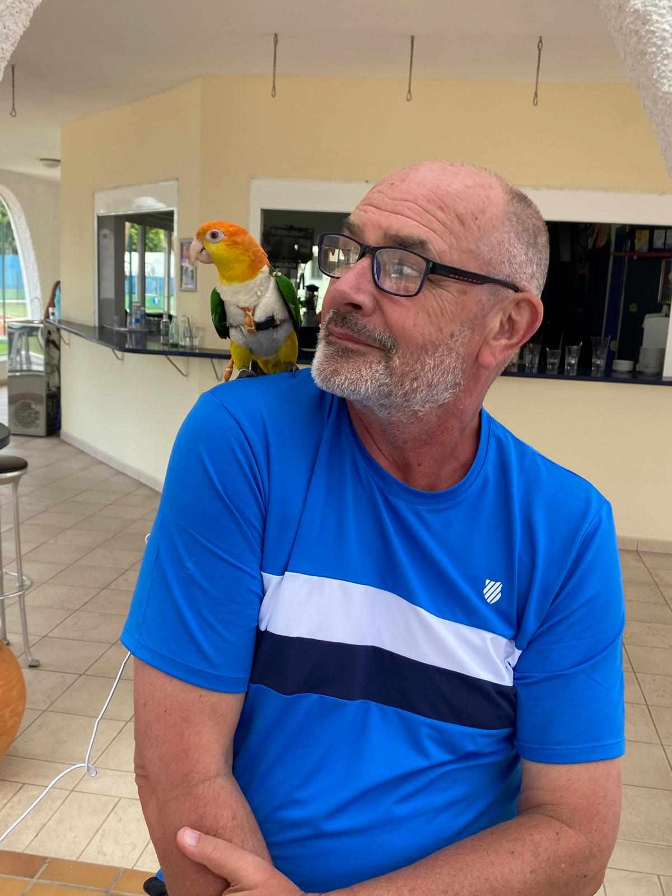

Sport to jego życie. Historia pełna pasji, wyzwań i sukcesów
Dariusz Polit rozpoczął swoją przygodę z tenisem w wieku sześciu lat w jednym z najstarszych klubów tenisowych w Polsce – AZS AWF Warszawa. Jego rodzina zawsze miała silne związki ze sportem, a ojciec był aktywnym zawodnikiem, co miało ogromny wpływ na wybór kariery syna. Dariusz trenował w jednym z najbardziej prestiżowych ośrodków w Polsce, w Parku Skaryszewskim w Warszawie, gdzie pod okiem znakomitych trenerów takich jak Alexander "Olek" Zawadzki, który był mentorem wielu przyszłych gwiazd tenisa, oraz Adam Królak – uznawany za znawcę historii światowego tenisa i honorowego członka Polskiego Związku Tenisowego.
Od najmłodszych lat Dariusz rywalizował w krajowych i międzynarodowych turniejach drużynowych, zdobywając pierwsze tytuły i nagrody. Jego umiejętności oraz pasja do sportu szybko zyskały uznanie. Po ukończeniu szkoły średniej, podjął decyzję o kontynuowaniu nauki w Akademii Wychowania Fizycznego w Warszawie, gdzie zdobył tytuł magistra sportu. Dodatkowo, specjalizował się w klasie mistrzostwa sportowego, co pozwoliło mu pogłębić swoją wiedzę i umiejętności trenerskie, a jego praca magisterska z zakresu fizjologii była realizowana w renomowanej Katedrze Fizjologii AWF. Był to fundament do dalszego rozwoju kariery, zarówno sportowej, jak i trenerskiej.
Po zakończeniu studiów, Dariusz Polit postanowił kontynuować swoją karierę za granicą. Wyjechał do Szwecji, gdzie otrzymał propozycję pracy jako główny trener w Kalmar Tenis Klub. Znalazł się w zupełnie nowym środowisku, ale jego wiedza i doświadczenie szybko pozwoliły mu zdobyć szacunek wśród lokalnych zawodników. Pod jego opieką rozwijali się młodsze talenty, takie jak Mattias Settergren, Johan Settergren oraz Alexandra Hinningsson, którzy z czasem stali się czołowymi zawodnikami. Dariusz nawiązał także współpracę z braćmi Peterem i Patrykiem Jabłońskimi, którzy, choć ostatecznie zdecydowali się na karierę muzyczną, zyskali międzynarodową renomę jako światowej klasy pianiści.
W czasie swojej pracy w Szwecji Dariusz ukończył liczne kursy trenerskie, specjalizując się w technice i taktyce gry w tenisa, a także w treningu mentalnym, który okazał się kluczowy w dalszym rozwoju zawodników. Współpracował z Karlskrona Tennis Klub, gdzie współtworzył nowe strategie treningowe, a także rozbudował Kalmar Tenis Klub. Po sześciu latach pracy w Szwecji, podjął decyzję o powrocie do Polski, a później o udziale w konkursie na stanowisko rektora Saltsjöbadens Tennis Klub w Norwegii. Jego kariera trenerska osiągnęła nowy poziom dzięki nieustannemu dążeniu do doskonałości i stałemu poszerzaniu wiedzy.
 Po kilku latach spędzonych na treningu i rozwoju swoich umiejętności w Szwecji, Dariusz Polit zdecydował się na rozszerzenie swojej działalności o biznes. Zainteresował się finansami i marketingiem, co pozwoliło mu na rozwój swoich umiejętności zarządzania. Podjął studia MBA, uzyskując tytuł w zakresie międzynarodowych finansów i marketingu. Dodatkowo, ukończył prestiżowy program MUCIA GLOBAL, który był realizowany na uczelniach w Stanach Zjednoczonych, co umożliwiło mu rozszerzenie działalności na arenie międzynarodowej. Pomimo zaangażowania w biznes i pracę korporacyjną, tenis nigdy nie przestał być jego największą pasją. Dariusz wrócił do gry, trenując na kortach w Australii, w miejscowościach takich jak Melbourne Surrey Hills i St Kilda, a także zdobywając kolejne doświadczenie na polach golfowych w różnych częściach świata. Po trzech latach rywalizacji w turniejach amatorskich, osiągnął rękę handicapową 14, co było jego dużym sukcesem w tej dyscyplinie.
Sport towarzyszył Dariuszowi przez całe życie. Jednak tenis nie był jedyną dyscypliną, którą uprawiał. Zafascynowany sportami ekstremalnymi, rozpoczął swoją przygodę z nurkowaniem, zdobywając certyfikat PADI Rescue Diver. Nurkował w różnych zakątkach świata, w tym w Meksyku, Egipcie, Polsce, na Kubie oraz na Wyspach Kanaryjskich, gdzie mógł odkrywać podwodny świat i zdobywać nowe umiejętności. Z czasem, jego pasja przeniosła się na góry, gdzie zdobywał najwyższe szczyty, w tym Mont Blanc, Kazbek oraz Kilimandżaro. Jego górska droga zakończyła się zdobyciem Island Peak w Himalajach, co było jednym z ostatnich etapów przed bazą pod Mount Everest. Dodatkowo, jazda na rowerze stała się integralną częścią jego życia. Wiele razy pokonywał dystanse ponad 100 km dziennie, co pozwoliło mu na utrzymanie świetnej kondycji i dalszy rozwój fizyczny. Dariusz dostrzegał w każdym sporcie wartość, która miała wpływ na jego życie osobiste oraz zawodowe.
  Sport w rodzinie Polita to nie tylko osobista pasja Dariusza, ale także tradycja, która jest kontynuowana przez kolejne pokolenia. Dariusz, który od najmłodszych lat zafascynowany był tenisowymi wyzwaniami, dziś dzieli tę pasję z córką, która również trenuje na kortach. Dziadek Dariusza, który był wielkim fanem skoków narciarskich i biegów narciarskich, często wprowadzał go w tematykę zimowych sportów. Dzięki swojej rodzinie, Dariusz uczył się wartości pracy zespołowej oraz dyscypliny, a sport stał się podstawą jego życia zawodowego. Rodzina Polita jest niezwykle zżyta i wspierająca się w każdej dziedzinie życia, co pozwala im osiągać sukcesy, zarówno na boiskach sportowych, jak i poza nimi.
